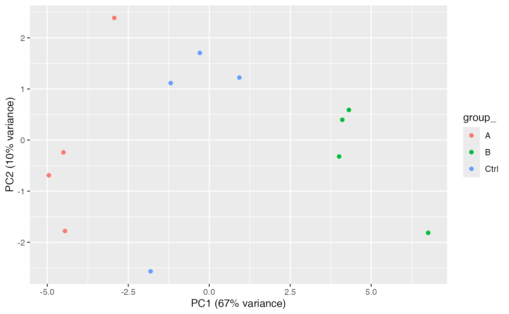

plot PCA
plot_pca(data, config, add_txt = FALSE, plotly = FALSE)See also
Other plotting:
Contrasts_Plotter,
INTERNAL_FUNCTIONS_BY_FAMILY,
UpSet_interaction_missing_stats(),
medpolishPlydf(),
missigness_histogram(),
missingness_per_condition_cumsum(),
missingness_per_condition(),
plot_NA_heatmap(),
plot_aggregation(),
plot_heatmap_cor(),
plot_heatmap(),
plot_hierarchies_add_quantline(),
plot_hierarchies_boxplot_df(),
plot_hierarchies_line_df(),
plot_hierarchies_line(),
plot_intensity_distribution_violin(),
plot_raster(),
plot_sample_correlation()
Examples
istar <- prolfqua_data('data_ionstar')$filtered()
#> Column added : nr_peptide_Id_IN_protein_Id
stopifnot(nrow(istar$data) == 25780)
config <- istar$config$clone(deep=TRUE)
analysis <- istar$data
tmp <- plot_pca(analysis, config, add_txt= TRUE)
#> Joining, by = "sampleName"
print(tmp)

tmp <- plot_pca(analysis, config, add_txt= FALSE)
#> Joining, by = "sampleName"
print(tmp)
 plotly::ggplotly(tmp, tooltip = config$table$sampleName)
plotly::ggplotly(tmp, tooltip = config$table$sampleName)